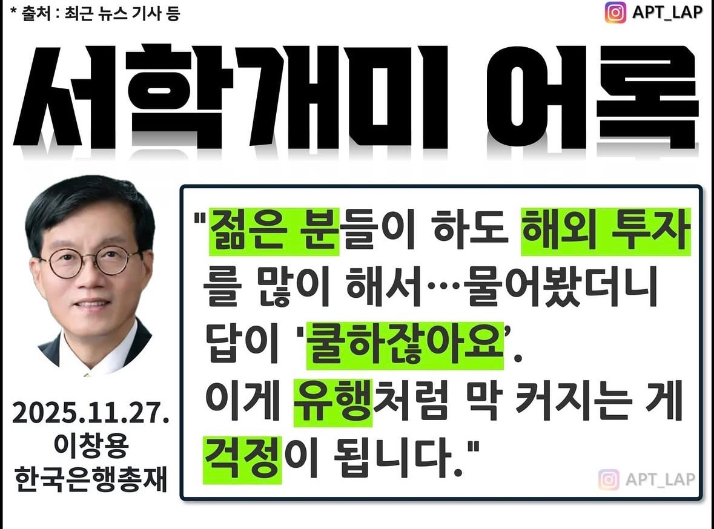
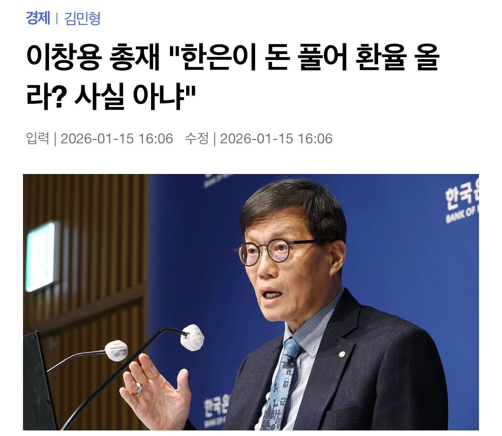
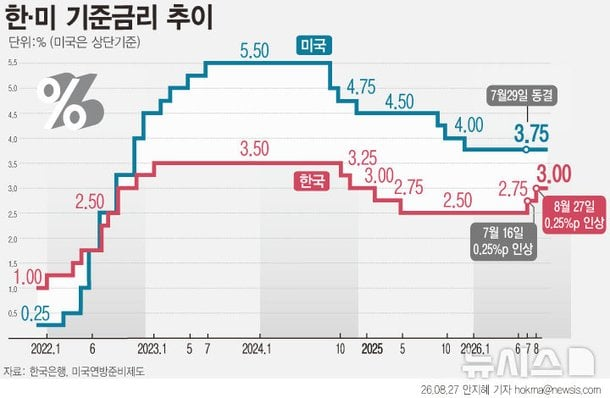
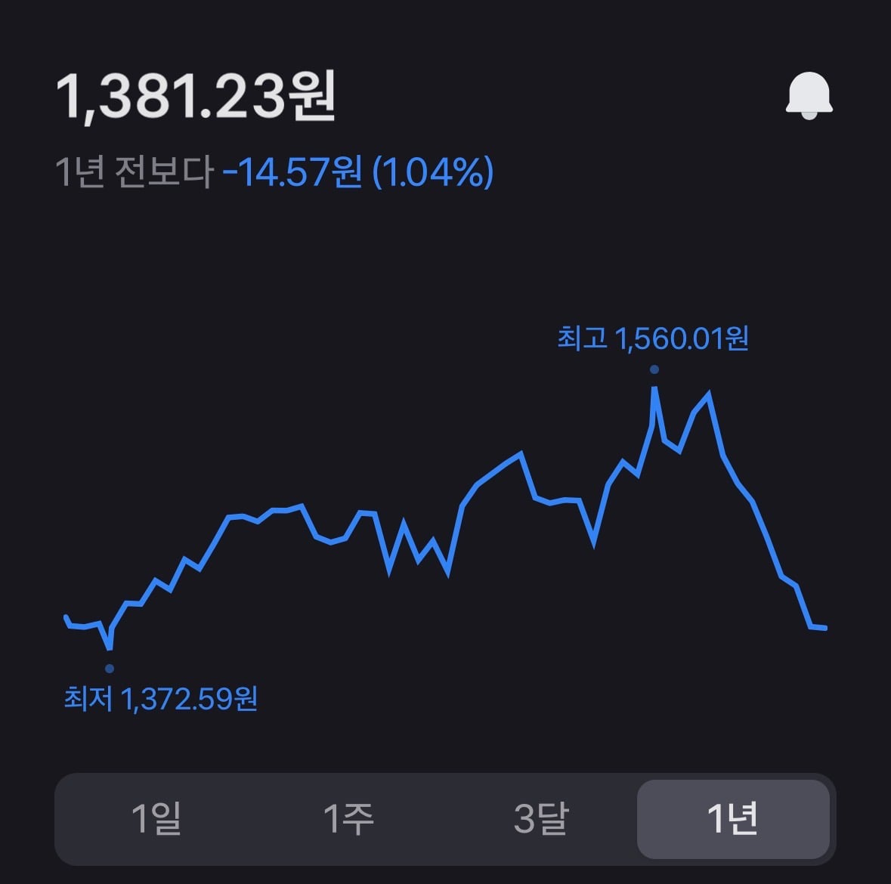

"고환율은 청년탓"

"돈 풀어서 환율 오른 거 아님"
... 결과는?


아 ㅋㅋㅋ
그저...
대단하다!
앰창용!

"고환율은 청년탓"

"돈 풀어서 환율 오른 거 아님"
... 결과는?


아 ㅋㅋㅋ
그저...
대단하다!
앰창용!
기축통화국인 일본도 금리올리는데 한국이 뭐라고 ㅋㅋ 미국이 30년 5프로주는데 누가 3프로따리 한국 국채사줌?ㅋㅋㅋ
그 일본 엔화는 기축통화가 아닌데요
기축통화란말이 달러 하나뿐이다게이야
근래 환율 떨어진 건 하이닉스가 달러 풀어서지 기준금리 덕이 아닐 건데...물론 영향이야 줬겠지만
스피어드래곤
1450원이 적정 수준으로 보임.
너무 내려가도 문제가 많아짐.
지금 달러 박는건 채권발행 존나많아서도 있지않음?
단순하게 생각하고 욕할 수 있는 것도 재능이다 ㅋㅋㅋ
복잡하게 생각해도 욕하는게 맞는데?
경제잘알 개붕이
이 십새끼만 아니였어도 글카 10만원은 싸게 샀을듯
정권에 휘둘리면서 아무것도 안한 사람인데 개드립에서 엄청 빨아주더라 ㅋㅋㅋ 자기가 힘이없으면 남탓이라도 하지말아야지 국민탓오지게함 ㅋㅋ
진짜 경제 알못들 ㅈㄴ많네
어휴...
힘내라들~